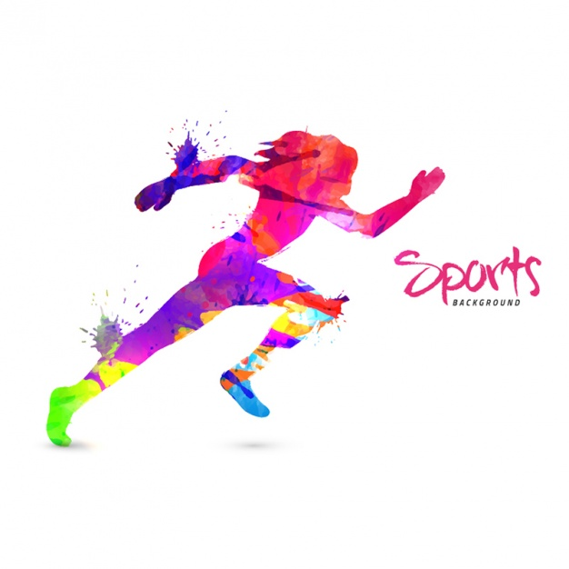
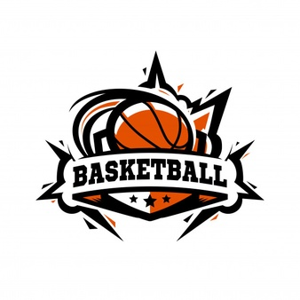

Natalia Bustinzar Delgado
CONOCEME
Hola!!!! Yo soy Natalia me considero una persona muy simpatica, sonriente, y que siempre te va a sacar una sonsira en todo momento hasta cuando estes triste. Mis mejores amigas se llaman Jennyfer, Valentina, Renata, Romina y Fatima.
Tengo 11 años y desde que tengo memoria no me ha gustado el chocolate, los bombones y la mayonessa mi comida favorita son las enchiladas suizas y mi bebida favorita es el geytore azul. Mi serie favorita es stranger things hasta tengo su abecedario pintado en la pared, Mi color favorito es el Morado, De mascota siempre he querido un gato o un tigre, Un instrumento que siempre quize tocar es el piano :)
No me dedico a nada pero me gusta jugar videojuegos y dibujar a los personajes de stranger things mi sueño es conocerlos y regalarles mis dibujos. El video que me da mucha risa es el del niño haciendo limonada:). Y la niña preparendo sus doritos :).

Mi personaje Favorito

Mi personaje Favorito de disney es Vanellope von Schweetz de "RALPH EL DEMOLEDOR" por que es muy divertida y muy valiente a pesar de que es una falla no le quita que es una princes a lo mejor no tiene vestido ni zapatillas pero en el fondo es una princesa gracias a su valentia.
Su mejor amigo es Ralph por que gracias a su ayuda se pudo convetir en princesa y con el paso los mejor momentos tambie aprendio que ser una falla tampoco es tan malo al contrario es muy bueno por que asi se puede defender solita.
Ademas siento que me identifica sientp que yo soy como ella divertida y un poco valiento no tanto como ella pero si un poco.
Mi Música Favorita


Educación
Don Bosco

Pase 6 años aprendiendo las materias basicas para mi desarrollo inicial y conociendo gente nueva
Alberts Club
Pase 3 años haciendo el deporte de atletismo ahi conoci a mi mejor amiga y hasta ahora fue cuando me cambie a basquetbol
Revolucion
En basquetbol no he pasado tanto tiempo solo llevo 4 meses en basquetbol y en esos 4 meses he descubierto que es mi deporte favorito
Aprende a tocar los acordes básicos, rítmicas y canciones famosas, además de todo lo elemental para empezar a tocar la guitarra de forma natural,
rápida y muy divertida. ¡Música desde el primer día! Estoy a tu lado en todo momento durante tu aprendizaje.
Codyssey es un curso de programación con una duración de entre 6 y 7 meses, que tiene como objetivo desarrollar habilidades lógicas, de comunicación y trabajo en equipo a través de las matemáticas y la programación.
El alumno aprenderá ruby y sql como lenguajes de programación para back-end y HTML, CSS y bases de JavaScript para desarrollo de front-end.

Deportes favoritos
Basquetbol
l baloncesto o básquetbol es un deporte en el cual compiten dos equipos de cinco jugadores cada uno. El objetivo es introducir la pelota (balón) en el aro (cesta o canasta) del equipo contrario, que se encuentra ubicado a 3,05 metros de altura. Por eso, el baloncesto suele ser jugado por personas de gran estatura